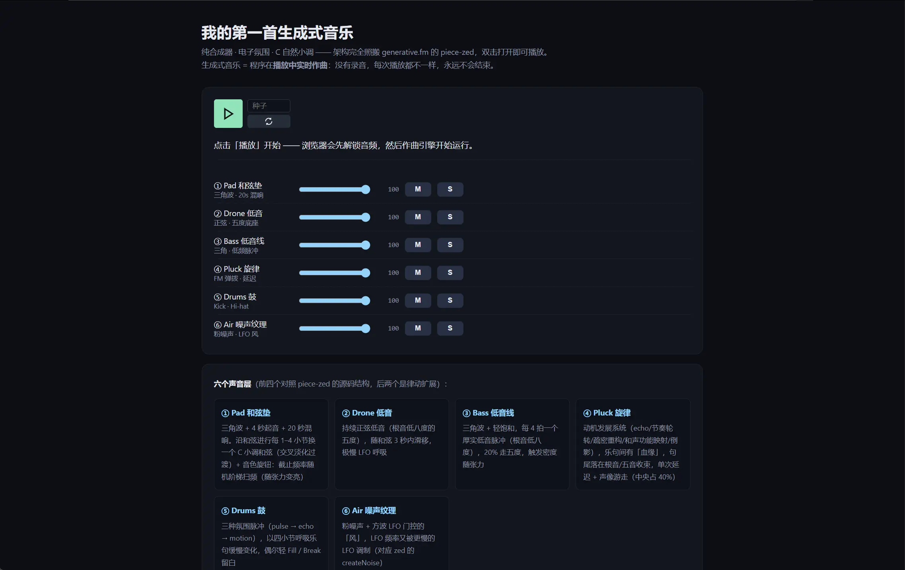
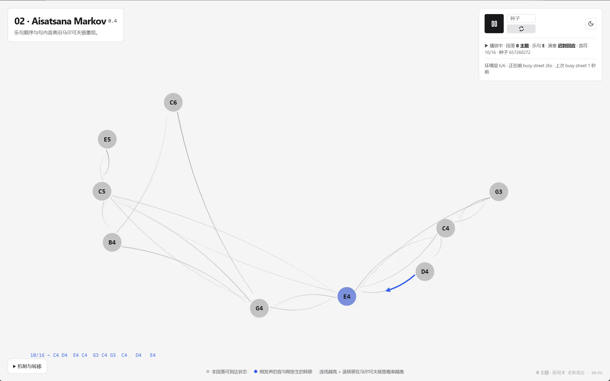
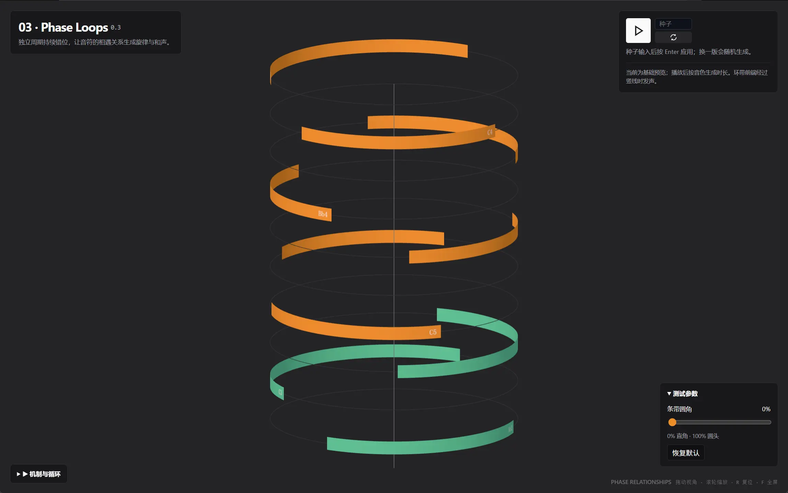
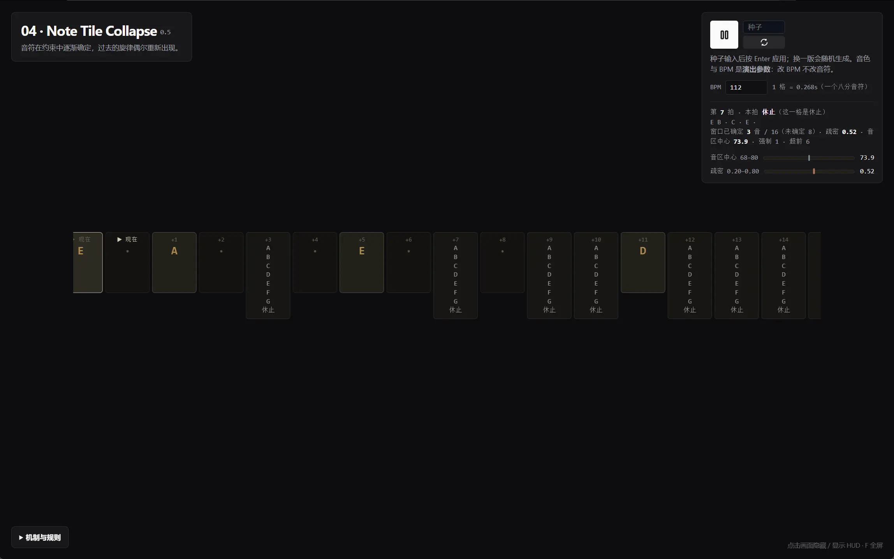
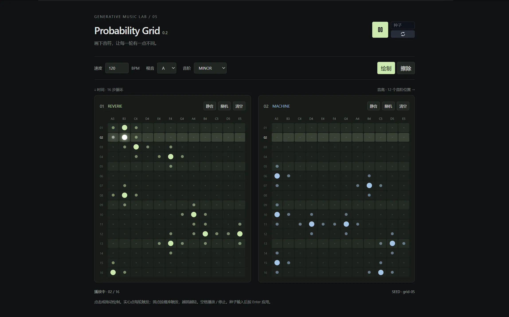
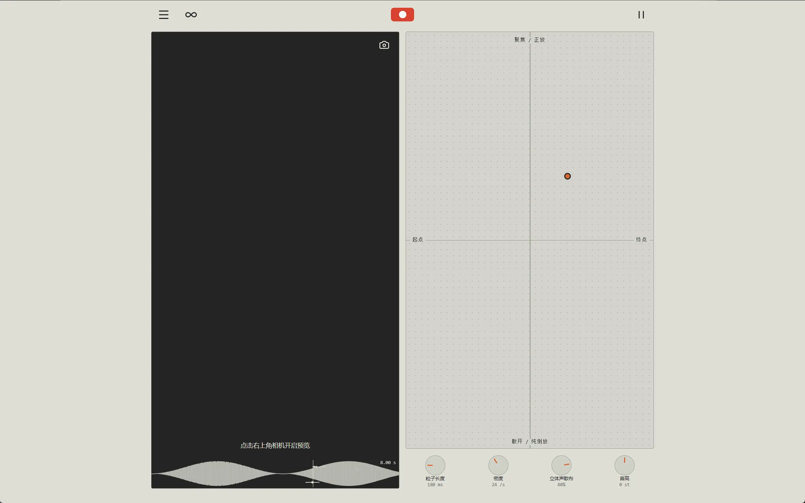

Generative Music Lab
用于学习、拆解和实践生成式音乐的个人实验室。

Exercise 01
Ambient Pulse
C 自然小调 · 氛围合成 · 动机发展 · 呼吸型节奏

Exercise 02
Aisatsana Markov 0.4
极简钢琴 · 马尔可夫乐句重组 · 记忆 + 重排

Exercise 03
Phase Loops 0.3
独立音符循环 · 3D 分层环带 · 系统音乐

Exercise 04
Note Tile Collapse 0.5
最小 WFC · 滚动未来窗口（可以一直跑）· 音区中心与疏密两个全局参数缓慢漂移

Exercise 05
Probability Grid 0.3
五声部共享音序画布 · 形状区分音色 · 从左向右播放 · 独立出现概率

Exercise 06
Granular 0.3.2
粒子采样器 · 摄像头实时预览 · 移动端 XY · 30 秒麦克风采样 · 精简顶栏（无实时输入）